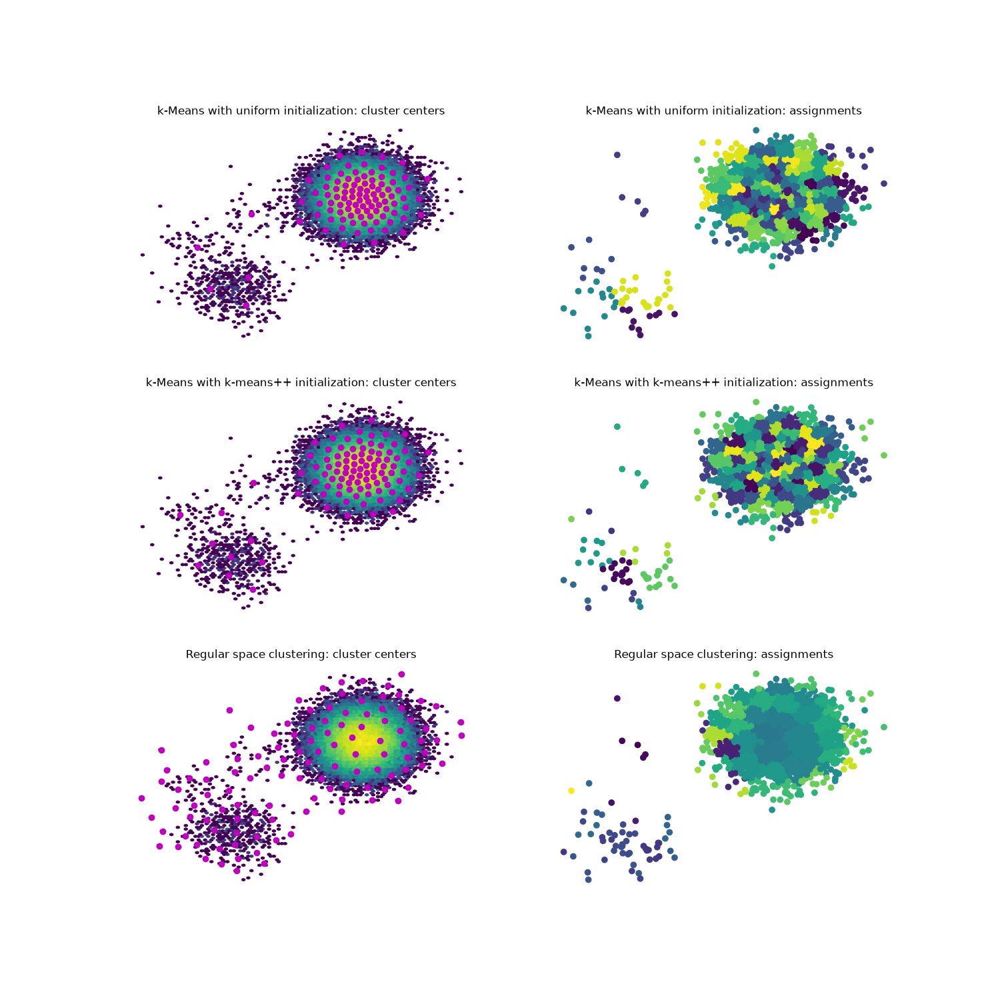

Note
Go to the end to download the full example code.
Clustering methods comparison¶
This example demonstrates the implemented clustering methods on one example dataset for a direct comparison.

8 import matplotlib.pyplot as plt # matplotlib for plotting
9 import numpy as np
10
11 from sklearn.mixture import GaussianMixture # for example data generation
12
13 from deeptime.clustering import KMeans, RegularSpace
14
15 rnd = np.random.RandomState(seed=17) # create a random state with fixed seed for reproducibility
16
17 n_components = 5
18 gmm = GaussianMixture(n_components=n_components, random_state=rnd, covariance_type='diag') # create a GMM object
19
20 gmm.weights_ = np.array([10., 100., 10000., 10., 10.])
21 gmm.weights_ /= gmm.weights_.sum() # weights need to form a probability distribution
22 gmm.means_ = rnd.uniform(low=-20., high=20., size=(n_components, 2)) # centers are random uniform
23 gmm.covariances_ = rnd.uniform(low=15., high=18., size=(n_components, 2)) # same for covariance matrices
24
25 samples, labels = gmm.sample(50000) # generate data
26
27 estimators = [
28 ('k-Means with uniform initialization', KMeans(
29 n_clusters=100, # place 100 cluster centers
30 init_strategy='uniform', # uniform initialization strategy
31 fixed_seed=13,
32 n_jobs=8)
33 ),
34 ('k-Means with k-means++ initialization', KMeans(
35 n_clusters=100, # place 100 cluster centers
36 init_strategy='kmeans++', # uniform initialization strategy
37 fixed_seed=13,
38 n_jobs=8)
39 ),
40 ('Regular space clustering', RegularSpace(
41 dmin=3, # minimum distance between cluster centers
42 max_centers=300, # maximum number of cluster centers
43 n_jobs=8)
44 )
45 ]
46
47 f, axes = plt.subplots(3, 2, figsize=(15, 15))
48
49 for i, (label, estimator) in enumerate(estimators):
50 clustering = estimator.fit(samples).fetch_model()
51 ax1 = axes[i][0]
52 ax2 = axes[i][1]
53
54 ax1.hexbin(*samples.T, bins='log')
55 ax1.scatter(*clustering.cluster_centers.T, marker='o', c='m')
56 ax1.axis('off')
57 ax1.set_title(label + ': cluster centers')
58
59 ax2.scatter(*samples[::10].T, c=clustering.transform(samples)[::10])
60 ax2.axis('off')
61 ax2.set_title(label + ': assignments')
Total running time of the script: (0 minutes 1.877 seconds)
Estimated memory usage: 734 MB